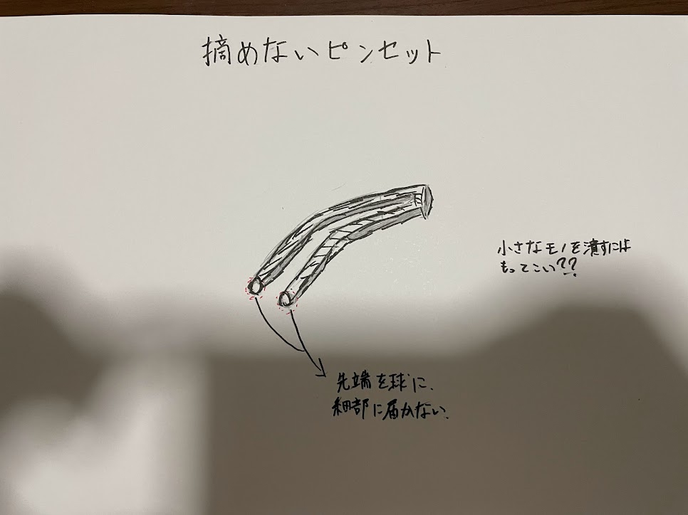
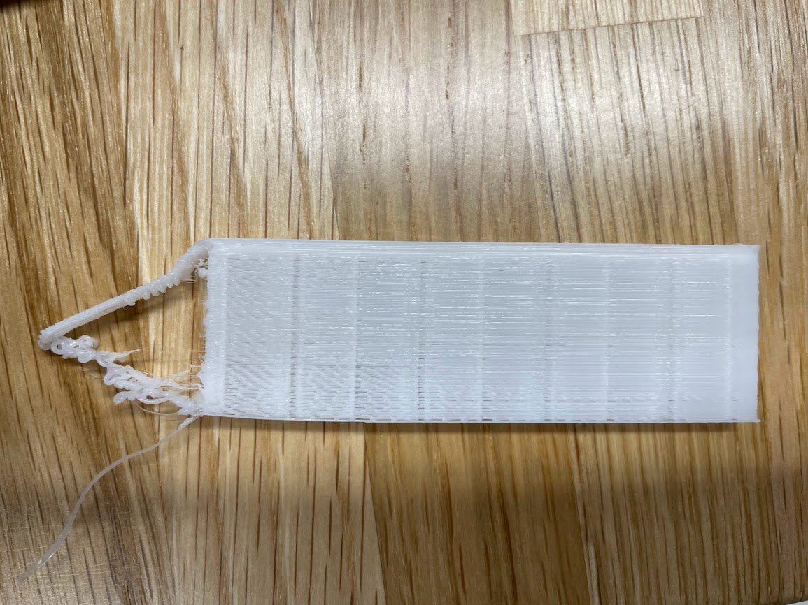

課題１(ピンセット)※途中です。
作品名[cannot pick]
スケッチ

普通のピンセットではないモノを作ろうと考え、みんなとアイデアを出し合った所からヒントを得、この摘まめないピンセットを思いついた。
本来であれば先端になればなるほど細くなるはずだが、今回は先端を球体にすることによって摘まむ部分をなくした。そうすることで摘まめないピンセットを実現させようと試みた。
試作品1

大失敗。設計の時点で少し上に設計しすぎたこと、球体を作るのが難しかったことが失敗の原因だと考えた。
stlファイル
試作品2
デザイン演習１・２トップページ
XBPトップページ